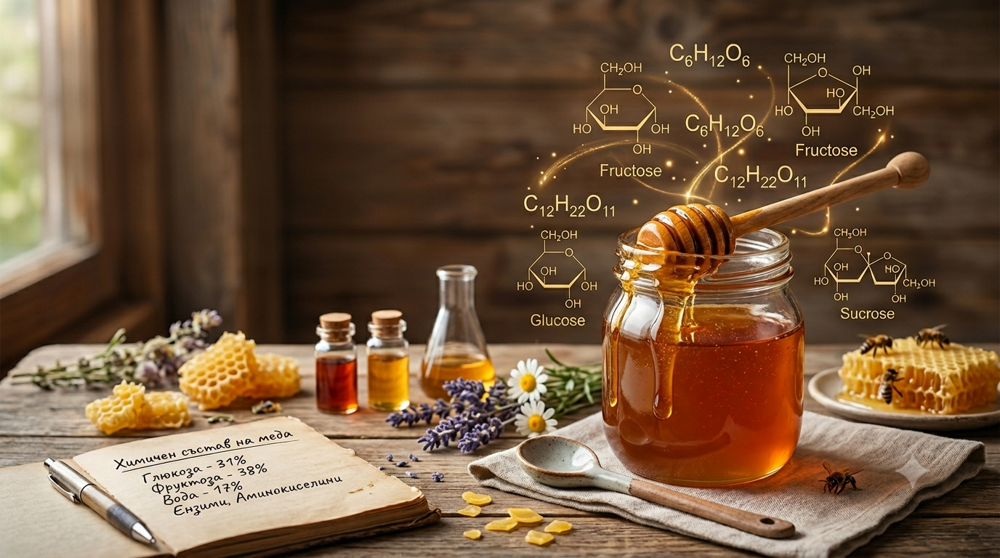

Друг източник на редките захари може да бъде действието на органичните киселини в медта върху концентрираните прости захари. Мнението, че медта съдържа декстрини, е погрешно. „Декстрините“ на медта всъщност са олигозахариди с ниска относителна молекулярна маса (тризахариди), но поради слабостта им в разтворимостта на алкохола биха приели за декстрини. Декстрините са високомолекулярни про-и фрукто-дукти, получени при разграждането на нищото, и съдържат само глюкоза, докато повече олигозахариди в меда това.
Количеството и съотношението между въглехидратите в меда зависят преди всичко от негов растящ продукт, но освен това от състава на нектара и от интензивността на нектара-коренното производство, от климатичните условия, от физиологичното състояние и породата на пчелите, от силата на пчелните семейства и т.н Основните компоненти на меда в количество от фруктозата и глюкозата, които обикновено се озна-чават като инвертна захар. Същество при класическите методи за определяне на него въз основа на техниките за редуциране на вашите свойства като инвертна захар се озна-чават и редуциращите олиго-захариди, докато силно погледнато под инвертна захар се разбира смес от равни количества глюкоза и фруктоза. Поради тези причини понятието инвертна захар се използва неправилно по отношение на меда. Правилна и точна е употребата на термина „редуциращи захари“. Редуциращите захари в меда да достигнат 75-80%. Те варират в доста широк диапазон не само при различните видове мед, но дори и при проби с един и същ растящ произход. Съотношението между фруктозата е характерно за отделните видове мед и в повече случаи е по-голямо от 1.0. Богати с фруктозата са акациевият и кестеновият мед (ФГ 1.5 - 1.7). Медът, богат с глюкоза и глюкозата (Ф/Г) например от рапица. Коза (Ф/Г по-малко от 1.0), е рядкост. Много изследвания в различни страни показват, че съдържанието на глюкоза в меда е от 20.4 до 44.4%, а на фруктоза от 21.7 до 53.9%. - от до 10%. Пчелният мед от повече растения, съдържащи под 5% захар роза, а по-някога (акации, лавандулов, манов) дуциращите дизахариди (малтозата и др.) съставляват до 14% от общото количество захари. За мановия мед се характеризира с високото съдържание на мелецитоза (4-11%) и ерлоза. Повече от това от останалите олигозахариди са в незначителни количества. В сравнение с нектарния мед мановят се отличава с по-голя-мото съдържание на по-високи захари. Не се наблюдават големи разлики във въглехидратния състав на меда от индийски пчели и от обикновената медоносна пчела.